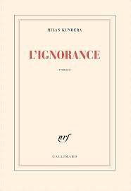

Ignorance - Milan Kundera
Milan Kundera's “Ignorance”, published in 2000, explores the themes of exile, memory and nostalgia through the story of Irena and Josef, two Czech migrants who, after many years abroad, return to their homeland after the fall of communism. The novel focuses on the complexity of the emotions involved in returning to a country that has changed, as well as on the idea of “great nostalgia”, the belief that a return to one's roots could bring happiness or inner peace. However, Kundera shows that this feeling is often an illusion. For Irena and Josef, returning to Czechoslovakia only underlines the strangeness of what was once familiar.